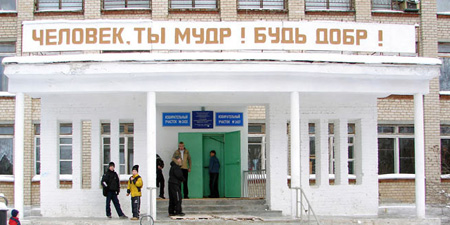
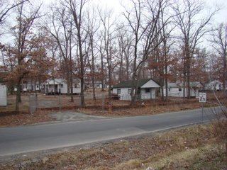

http://sl-lopatnikov.livejournal.com/185400.html
sl_lopatnikov
Сравнение уровня жизни СССР 1980 и США 2008
Пришел выдающийся по идиотизму текст от некоего эльфа.
maxdz Средняя зарплата совка была порядка 120 руб. в месяц. Средняя зарплата чела на западе была порядка 1500 баксов в месяц. 10 руб стоили на чёрном рынке 1 бакс и такова была реальная покупательная способность рубля, в стране тотального дефицита
Отсюда имеем, чел в совке в месяц получал 12 баксов за работу, за которую, чел на Западе получал 1500 баксов. А на разницу (1488 баксов в месяц), совок предоставлял yбогое бесплатное образование и медицину.
Во-вторых, нет смысла называть совковый рубль деньгами и сравнивать их с деньгами по какому-либо курсу. Совковый рубль являлся карточками, за которые в совке - стране тотального дефицита, можно было купить 1 вид колбасы, 5 видов хлеба, да 1 вид водки.
Поскольку у человека мозги отбиты пропагандой, счел полезным вернуться к теме.
Прежде чем сравнивать, хотел бы сделать одно крайне существенное обстоятельство, которые эльфы не в состоянии осмысить категорически. СССР только в результате нападения Германии потерял в 1941-1945 гг около трети национального богатства. В материальном выражении – это следующее:
Районы СССР, бывшие во временной оккупации, занимали накануне Отечественной войны по отношению ко всей территории СССР значительный удельный вес: в численности населения — 45%, в валовой продукции промышленности — 33%, в посевных площадях — 47%, в поголовье скота (в переводе на крупный скот) — 45% и в протяжённости железнодорожных путей — 55%.
Немецко-фашисткие захватчики и их пособники сожгли и разрушили 1710 городов и поселков, более 70000 деревень, полностью или частично разрушено 1.5 млн. зданий и сооружений. Кров потеряли около 25 млн. человек. Также разрушено и уничтожено 31850 промышленных предприятий (из них особо важную роль играли машиностроимтельные и металлургические предприятия, дававшие до 60% валового довоенного продукта), не считая мелких предприятий и мастерских, 1876 совхозов, 2890 машинно-тракторных станций, 98000 колхозов, 216700 магазинов, столовых, ресторанов и других торговых предприятий, 4100 железнодорожных станций, 36000 почтово-телеграфных учреждений, телефонных станций, радиостанций и других предприятий связи, 6000 больниц, 33000 поликлиник, диспансеров и амбулаторий, 976 санаториев и 656 домов отдыха, 82000 начальных и средних школ, 1520 специальных учебных заведений — техникумов, 334 высших учебных заведения, 605 научно-исследовательских институтов и других научных учреждений, 427 музеев, 43000 библиотек общественного пользования и 167 театров.
Разрушены, уничтожены или похищены немецкими оккупантами и их сообщниками на территории СССР, подвергавшейся оккупации, 175 тысяч металлорежущих станков, 34 тыс. молотов и прессов, 2700 врубовых машин, 15 тыс. отбойных молотков, 5 млн. кет мощностей электростанций, 62 доменные печи, 213 мартеновских печей, 45 тыс. ткацких станков и 3 млн. прядильных веретён. Нанесён материальный ущерб ценнейшим основным промышленным фондам СССР.
Из 122 тыс. км железнодорожной колеи, бывшей до войны на территории СССР, подвергавшейся оккупации, разрушено и разграблено оккупантами 65 тыс. км железнодорожной [160] колеи. Повреждено 15800 паровозов, 428000 вагонов. Оккупанты уничтожили, потопили и захватили 4280 пассажирских, грузовых и буксирных пароходов речного транспорта и судов технического вспомогательного флота и 4 029 несамоходных судов. Из 26 тыс. железнодорожных мостов разрушено 13 тыс. Все имевшиеся в оккупированных районах СССР 2078 тыс. км проводов телеграфно-телефонных линий связи разрушены или похищены немецкими оккупантами.
Варварскому уничтожению путём взрывов и поджогов подвергся жилой фонд населения СССР. Из 2567 тыс. жилых домов в городах СССР, подвергавшихся оккупации, уничтожено и разрушено 1209 тыс. домов, причём по размерам жилой площади это количество домов составляло свыше 50% всей городской жилой площади указанных городов. Из 12 млн. жилых домов сельского населения районов СССР, подвергавшихся оккупации, разрушено и уничтожено немецкими оккупантами 3,5 млн. жилых домов.
Ничего близкого в США не было. Напротив, за счет войны США удвоили свой ВВП.
Понятно, что в воспаленном мозгу эльфов, эти потери должны были восстановится сами собой и немедленно. Однако, надо же: с начала перестройки прошло вот же 24 года, а страна не восстановила ни по единому жизненному показателю даже уровня 1985 года...
Поэтому, когда в качестве базы сравнения мы берем 1980 год СССР, следует помнить, что с момента окончания войны в этот год прошло 35 лет – всего на десять лет больше, чем с начала «выдающихся демократических преобразований».
Второй момент, который следует иметь в виду – это разница в структуре доходов в СССР и США.
Вот структура доходов семей в США в 2007 году по данным Цензус бюро США.
Прим: Диаграмма утеряна.
Исходя из этого распределения, средний годовой доход американской семьи составляет сегодня около 50,000 долларов.
Мы видим, однако, что это распределение имеем два выраженных горба, словно «низший класс» с доходом менее 100,000 и «высший класс» с доходом более 100,000. «Высший класс» составляет примерно 13% населения. Распределение доходов в СССР имело иной характер: существенно по численности «высшего класса» в СССР не было и доля высокодоходных семей равномерно и быстро уменьшалась.
Между тем, наличие достаточно массового «высшего класса» в США существенно деформирует представление о реальном уровне жизни в США. Во-первых, это класс более видим туристам, которые редко посещают относительно более бедные районы. Именно этот средний класс обладает наиболее «заметным» жильем и автомашинами и, главное, в этот класс как раз попадают люди примерно той же прослойки, которые в СССР сравнительно часто выезжали за рубеж, но в силу отсутствия такой прослойки в СССР, их доход был скорее сопоставим с доходом средне-низшего класса США. Эта специфика подчеркивается огромной разницей в децильном коффициенте (относительном доходе 10% наиболее богатых к 10% наиболее бедных) США и СССР.
Имея в виду это обстоятельство, правильнее сравнивать уровень жизни советской среде-доходной семьи с уровнем жизни американской средене-нижне-доходной семьи. Нетрудно пересчитать, что средний годовой доход на семью, если вычесть «верхний пик распределения, в США, на деле не превышает 40,000 долларов.
Вот с этой цифрой и надо сравнивать уровень жизни средней советской семьи, которая в 1980 году получала, как известно, при двух работающих составляла примерно 340 рублей в месяц (средняя заработная плата – 170 рублей в месяц на работающего) , или акурат примерно 4000 рублей в год. То есть по номналу, в 2007-2008 годах, доход средней американской семьи выраженный в долларах как раз в 10 раз больше номинального дохода средней советской семьи в 1980 году.
Это номинальное сравнение, однако, должно быть дополненно анализом сравнительной реальной покупательной способностью современного доллара и советского рубля 1980 года именно в плане бытового потребления.
Сравнение бытовой покупательной способности рубля и доллара
Обязательные траты и их доли в потреблении.
Важнейшая составляющая сравнения – это обязательные траты, которые не могут быть исключены или существенно сокращены. Я отношу к обязательным тратам четыре категории расходов:
- Расходы на жильё
- Расходы на обязательный транспорт
- Расходы на питание
- Расходы на одежду
Первые три категории сравнимы наиболее просто, так как не зависят от климата и «повседневны». Расходы на одежду близки к расходам на предметы долговременного пользования, так как несмотря на относительно высокую «разовую» цену, одежда расходуется достаточно долго и ее вес в повседневных тратах сравнительно невелик.
Это относится также к таким товарам, как например, телевизоры или мебель: их сравнительно высокая разовая цена распределяется на длительные промежтки времени – на время амортизации, которое для телевизоров, к примеру, исчисляется годами, а для мебели и десятилетиями. Поэтому, мы ограничимся сравнением именно базовых, повседневных затрат, составляющих львиную долю обязательного потребления.
Жилье
Цена жилья в СССР. 1980 г. Аренда.
- Цена квартирной платы за стандартную двухкоматную «государственную» квартиру в Москве составляла 12.5 рубля в месяц.
- Цена телефона – 4 руб. В месяц.
- Средняя цена электричества – 0.02 руб. за киловат-час
- Газ – неограниченного пользования 2 рубля в месяц
- Отопление – 2 рубля в месяц.
Цена жилья в США 2009 год. Аренда.
- Цена аренды «1-бедрум» квартиры не менее $700 вне крупных городов. Популярный сайт www.realtor.com по Александрии (пригород Вашингтона) дает минимальную цену в $900 долларов за квартиру в 590 кв.футов (менее 50 кв. метров). В диапазоне до 1000 долларов обнаружено только 15 предложений на примерно миллионный пригород.
- Цена стационарного телефона – $36 долларов в месяц
- Цена воды - $30-50 в зависимости от потребления
- Цена электричества - средняя по США – $0.11 за квт-час
- Газ – зависит от потребления. Я лично за дом зимой заплатил 360 доллров за 3 месяца, то есть примерно, 120 долларов в месяц. Фактически, это также и цена отопления и горячей воды.
Коффициент пересчета по жилью:
Общие затраты на жилье в СССР за двухкомнатную квартиру – около 25 рублей в месяц.
Общие затраты на жилье в США за эквивалентную «1-берумную» квартиру – около 1000 долларов в месяц
Таким образом, коэффициент пересчета: 1000:25=40. То есть, по жилью, покупательная способность советского рубля равна примено 40 современным долларам.
Жилье для бедных в США. Этот дом в Александрии стоит сегодня, во время кризиса $523900:

Транспорт
Необходимость учета транспорта в качестве обязательных расходов связана с простым фактом: чтобы получать доход, до работы нужно как минимум доехать.
Опять здесь мы сталкиваемся с приниципиально разной структурой потребления. В США общественный транспорт, за исключением крупных городов, практически отсутствует. Тогда как работа чато удалена от места жительства не десяток, а то и дестяки миль. Поэтому мы обратися прежде всего к сравнению затрат на транспорт в крупных городах.
Москва 1980. Цена единого проездного в Москве составляла 3 рубля в месяц на все виды транспорта.
Нью-Йорк 2009. В Нью-Йорке отсутствует тролейбусный и трамвайный транспорт. Автобусные маршруты ограничены доставкой пассажиров к станциям метро. Независимые от метро маршруты, насколько мне известно, отсутствуют. Цена месячного проездного на метро и автобус составляет $80.
Содержание машины в США. В США в силу принудительности покупки автомашины на каждого работаюшего, затраты на автомашину следует рассматривать как обязательные. В отличие от СССР, где владение автомашиной было вполне факультативным, так как были альтернативные способы перемещения.
Средний пробег автомашины в США оценивается в 12.5 тысяч миль в год. Практически полная аммортизация машины осушествляется по достижении премрно 100-120 тысяч миль. То есть можно считать, что затраты на атомашину аммортизируются примерно за 10 лет. С учетом средней цены автомашины в $20,000, цена аммортизации составляет $2000 в год. К этой цене следует добавить цену бензина. При расходе топлива 30 миль на галлон (по трассе), что характерно для 4-х цилиндровых машин среднего и низшего классов, годловой расход бензина составляет 12500:30 = 416 галлонов бензина. При цене галлона в $2 за галлон, годовые затраты составляют $832. Итого, месяный расход на аммортизацию и бензин составляют $236, к которым следует добавить еще обязательную страховку, езда без которой карается законом. Цена минимальной страховки (в один конец – то есть покрывающей расходы только другой стороны) составляет $60 в вмесяц. Итого, минимальный транспортный расход начеловека в случае использования машины, составляет примерно $300 в месяц.
Коэффициент пересчета по транспорту:
Таким образом, «транспортная покупательная способность» советского рубля от примерно 30 до 100 раз выше покупательной способности современного доллара.
Питание
Сопоставление по питанию более затруднительно в силу существенно разного стиля еды. Возможны два типа сопоставления: по цене обеда в обещпите СССР с массовыми сетями в США и по наиболее распространенным продуктам.
Разовое питание в наиболее дешевой массовой сети США «МакДональдс» в виде буттерброда с салатом, котлетой, жареной картошкой-фри и стаканом «соды» - то есть газированной воды, составляет $6-7.
Разовое питание из трех блюд: борщ, кислосладкое мясо в горшочке и салат плюс стакан кофе или чая, в средней советской столовой ободлилось в 0.60 рубля. Минимальная цена полного обеда: суп, котлета с картофельным пюре или грчневой кащей - 0.32 рубля.
Коэффициент «по БигМаку» : Таким образом, коэффициент по «БигМаку» составлял 10-20 – один советский рубль 10-20 современных долларов США.
Второй возможный путь сопоставления – по цене отдельных продуктов.
Коэффициент по картофелю: Цена картофеля в СССР 1980 года составляла 0.1 рубля. Цена картофеля в США 2008 года составляет $0.5-0.9 за фунт или $1-2 за кг. Коэффициент по картофелю составляет 10-20.
Коэффициент по мясу. Поскольку в некоторые годы в СССР существовал дефицит мяса пол магазщинной цена, но на рынке мясо всегда было по цене 4-6 рублей за кг против $8-15 за килограма в США сегодня, коэффициент по мясу может быть с гарантей оценен, как 2-4 (два-четыре современных доллара за 1 советский рубль)
Коэффициент по хлебу. Цена буханки белого хлеба весом 450 гр в ССР составляла 0.13 руб. Цена эквивалетной буханки хлеба в США сегодня составляет $1.5-3. Коэффициент пересчета составляет, таким образом, 10-20
Третий способ пересчета – по затратам еду на семью в месяц.
Наша семья стабильно тратила в месяц на еду человека 60 рублей (180 рублей на троих)
Американская семья из трех человек тратит на еду около 800-900 долларов – то есть 250-300 долларов не человека. Соответственно по этому критерию, можно считать, что 1 советский рубль равнялся примерно 5 современным американским долларам.
Одежда
Соотнощение покупательной способности советского рубля по одежде также очень сложно. Однако, по основным направлениям можно убедиться, что коэффициент пересчета по обуви составляет примерно 3-4 – то есть один советский рубль - 3-4 совеременных доллара (по обуви сопоставимого качества), за исключением женских сапог, где тот же коэффициент составляет опять-таки 10 (цена женских зимних утепленных сапог в США – 500-700 – долларов)
При этом по ряду видов одежды – мужским пальто, курткам костюмам равно качества это примерно 3-4.
Выводы
Таким образом, покупательная способность советского рубля по разным видам товаров и услуг колебется от 3-4 до 100 современных доллров за советский рубль.
Учитывая различный вес разных типов потребления, можно посчитать, что совсетский рубль 1980 года в среднем равняется 10 современным американским долларам и, следовательно, жизнь американца сегодня, НО НЕ ВХОДЯЩЕГО В ВЫСШУЮ ДОХОДНУЮ ГРУППУ сопоставима по качеству с жизнью средлнего жителя СССР в 1980 году.
Таким образом, кажущаяся разница между уровнем жизни в США и СССР связана исключительно с неправомерным сравнением жизни СРЕДГЕГО СОВЕТСКОГО ЧЕЛОВЕКА С УРОВНЕМ ЖИЗНИ АМЕРИКАНЦЕВ, ВХОДЯЩИХ В ВЫСШУЮ ДОХОДНУЮ ГРУППУ И С НЕСОВПАДЕНИЕМ ПРИОРИТЕТОВ ОПЛАТЫ, ибо люди с высшим образованием в СССР не обязательно входили в вышую совесткую доходную группу (нтак, например, средняя зарплата в науке в 1980 году назоилась на четвертом месте после строительства транспорта и промышленности), тогда как в США высшую доходную группу во многом составляют люди с высшим образованием.
Иными словами, рабочие в СССР жили НЕ ХУЖЕ, а то и лучше, чем аналогичные рабочие в США, тогда как интеллигенция в СССР, в отличие от США, не попадала в вышую доходную группу.
Справдливости ради надо заметить, что такое положение дел – еще одно «достижение» Хрущева и Брежнева. Так, при Сталине, даже во время войны, средняя зарплата инженеров была в 2.6 раза выше, чем зарплата рабочих, а зарплаты преподавательско-профессорского состава до 6-7 раз выше. Об отношении Сталина к интеллигенции можно судить по акдемическим и профессорским дачам на околиной горе, в Мозжинке, в Серебряном бору, в Переделкино, на Клязьме и остальных аналогичных местах, цена которых сегодня достигает МИЛЛИОНОВ ДОЛЛАРОВ – что никаким американским профессорам и не снилось.
Такова реальная , а не эльфийская, реальность.
Это не значит, что в СССР не было проблем. Но сам ход перестройки показал, что они были минимальными. Ибо пресловутый дефицит сегодня ЗА СЧЕТ ПОВЫШЕНИЯ ЦЕН в РФ исчез, несмотря на то, что потребление людейсократилось абсолютно по всем парамерам, причем, например, по мясу – почти вдвое. Кроме разве что автомобилей.
Тема задела за живое. Поэтому нужно ее продолжить.
За очевидностью представленных данных никто, кроме совсем уж ничего непонимающих товарищей, не решился их опровергать. Единственное дополение, связанное с жильем, которое необходимо сделать, состоит в следующем. Два человека сделали следующее утверждение: в США-де «большинство населения является собственниками домов», а молодые не живут с родителями.
По первому тезису хочу напомнить известное выскзывание Ф.Энгельса: «Есди сапожную щетку отнести к разряду млекопитающих, молочные железы у нее от этого не вырастут».
Почему? – Да потому что собственников жилья в США крайне мало. Точнее, так: считается, что 66% «владеют» домами (остальные-таки жилье арендуют). На самом деле, они не владеют ничем. Абсолютное большиство из них «купили» дома в кредит, по ипотеке. То есть на самом деле, владеют домами БАНКИ, у которых американские владельцы взяли в АРЕНДУ деньги. Реально, кредит стоит порядка 7-8% стоимости дома и берется на срок в 30 лет. Это значит, за время выплаты кредита, человек за каждый взятый доллар выплачивает еще два- два с половиной банку. То есть 2/3 его выплат – это чистая аренда. При этом есть еще два дополнительных обстоятельства: первое и очень существенное состоит в том, что поскольку «арендатор денег» назван «собственником жилья», он в отличие от арендатора жилья, несет полную ответственность за состояние дома. Прохудилась крыша – его ответственность, сломался унитаз – то же. При аренде, цена этого входит в цену аренды. Здесь она просто выплачивается иным способом по мере поступления, точнее, как правило, в виде страховки, которая выплочивается страховой компании. Это премия реальному собственнику жилья – банку, - который, тем самым, снимает с себя все заботы о сохранности принадлежащего ему жилья.
Вторая особенность, состоит в том, что выплаты по кредиту распределяяются очень специальным образом. Первые пять лет «арендатор денег» платит банку только и исключительно интерес. Абсолютно все идет в погашение тех самых 2/3 суммы, которую банк должен получить в виде премии. Только после пяти лет начинаются некоторые, минимальные, отчисления в счет основной части кредита и только в конце срока основные выплаты идет в погашение кредита. Что это означает? – Означает это, что первые пять лет человек является ТОЛЬКО И ИСКЛЮЧИТЕЛЬНО АРЕНДАТОРОМ ЖИЛЬЯ У БАНКА с возложенной на него ответственностью следить за его состоянием.
И самое смешное, что эти пять лет – как раз близко к среднему времени владения давнным домом. Обычно средний американец в связи со сменой работы через пять-семь лет вынужден пеезжать на новое место жительства. В результате, это ровно та же аренда, только в «профиль».
Есть немаловажное третье обстоятельство: Что же в результате – если кредит полностью выплачен, - остается в руках собственника? – Ответ: обственнику остается практически полностью амортизированный дом, подлежащий как минимум капитальному ремонту, стоимость которого сопоставима со стоимостью нового жилья.
Инами словами, «владение домом» - это практически чистая разводка.
Как, к слову сказать, и владение машиной, кредит на которую выдается на пять лет. При этом за пять лет машина амортизируется по меньшей мере на 75% при средне-большом пробеге.
Понятно, что гордое название «собственник» ласкают душу, но не имеет практически ничего общего с реальностью.
Второе замечние - это, разумеется, пресловутый дефицит, который был в СССР и которого нет в США.
Хотя это и неверно по существу, поскольку в 1980 году продукты, д а и все остальное, можно было совершенно свободно купить на рынке, но люди этого НЕ ХОТЕЛИ, так как искали все в магазинах по назначенной государством, а не рыночной цене, есть и более важное непонимание этого вопроса.
А именно: дефицит на полках магазинов неудобен, но совершенно не означает БЕДНОСТИ в смысле малости потребления. Напротив, полные прилавки удобны, но совершенно не означают богатства.
Реальной мерой является реальное потребление, а не вид полок.
Так вот: по всем основным видам продукции (за исключением, вероятно, машин), прежде всего по качеству питания, потребление в НОВОЙ РОССИИ УПАЛО по сравнению с СССР. Этого не отрицают даже реформаторы. А это означает, что ДЕ ФАКТО сегодня народ в России – при полных полках – беднее, чем был при СССР в условиях дефицита. Абсолютный макисмум потребления был достигнут в 1985 году.
Это не оправдание дефицита, разумеется. Но, это ясное указание на то, что дефицит и богатство – то есть уровень жизни – это вещи, которые лежат в качественноразных плоскостях.
Относится это не только к сравнению СССР и РФ, но также к сравнению США и СССР. Полные полки в США совершенно не означают, что уровень потребления основной массы населения США выше, чем был у основной массы в СССР в 1980 году.
Попытка представить дело так, что дефицит, мол, свидетельство бедности, а отстствие дефицита = высокому уровню жизни – такая же обманка, как и утверждение, что арендаторы жилья по ипотеке являются его реальными собственниками.
Наиболее интересен третий тип комментариев: хорошо, вы доказали, что с точки зрения удовлетворенности основных потребностей мы видим, что средний житель СССР жил, по крайней мере, не хуже, чем средний житель США (за исключение «высшего класса»), но уровень жизни во многом определяется как раз «роскошью». Тем, что человек может себе позволить сверх основных потребностей.
Как мы видели, с учетом пропорциональности по основным затратам, средний доход на семью советского человека 1980 года примерно равен доходу среднего американца 2008 годе (если исключить из рассмотрения американский «высший класс»). Следовательно, «свободные остатки тоже примерно пропорциоанльны и можно сравнивать напрямую коэффициенты пересчета по отдельным формам приложений этого остатка.
И тут мы сталкивается со столь разительными различиями в структуре потребления, что можно сделать только один вывод: по всем направления свободного развития человека – а это кружки для детей, театры, консерватории, кино, книги, отдых, рубль был практически бесконечно весомее доллара.
Так, например, совершенно невозможно сравнивать абсолютно бесплатное и исключительно качественное советское вузовское образование с платным и очень дорогим высшим образованием в США вактически мастерского уровня. Во сколько раз рубль выше доллара в сфере высшего образования, если год в очень среднем вузе в США обходится в $30000 (курс 150 тысяч), в престижных университетах в 60000 и выше (курс – $250000-300000) – и это без учета затрат на жилье, тогда как обучение в советских вузах было мало того, что бесплатным, но еще выдавалась стипедия в ращмере 40-45 рублей и место в общежитии столи около 3-5 рублей в месяц?
Как можно сравнить детское обучение, если недельный специализированный летний лагерь, скажем, c «продвинутым изучением математики» обходится американцу около $1000, тогда как годовые занятия в в любом круже или любом количестве кружков в Домах (Дворце) пионеров, в Домах культуры не стоили вообще ничего?
Но можно сравнить по сравнимому.
Билет в Московскую консерваторию стоил от 60 копеек до 3 рублей в лучших местах. Консерваторий как таковых в США, кажется, просто нет. Кто знает лучше, пусть поправит. Но есть определенная аналогия – Карнеги-центр в Нью-Йорке.
Вот цены на концерт филадейльфийского симфонического оркестра: минимальная – 97 долларов. Ложа 300 долларов. Мораль: Коэффициент 100.
Кино. Цена билета в советских кинотетрах была разная – от 0.25 для 0.6 рубля (последнее в России и Мире). В США эта цена начинается от 6 долларов. Коэффициент как минимум 10, а если сравнивать с дешевыми билетами, то 24.
Отдых. Мало того, что продожительность оплачиваемого отпуска в США равна 3 календарным неделям, а в СССР четырем, интересно сравнить цены на отдых.
Санаториев и домов отдыха, как таковых, в США, насколько мне известно, опять-таки нет. Есть круизы или турпоездки. Обычная цена недельного тура во Флориду составляет минимум $600 (отдельный вопрос, что билет в Дисней Ворлд стоит $70 на человека) , без питания. Тогда как четырехнедельный отдых в Ялте начинался со 120-150 рублей с трехразовым питанием, плюс в санаториях – бесплатное медобследование и лечение.
Коэффициент, стало быть, может быть оценен минимум как 2400/120= 20 раз.
Книги. Тиражи популярных книг в СССР исчислялись сотнями тысяч, что превосоходит типичные тиражи в США в десятки раз. Тем не менее в СССР в 80-е годы наблюдался дефицит худождественной литературы. Причиной дефицита бвли баснословнео низкие цены на книги. Редкая книга стоила более 2 рублей. В США цена аналогического качества книг составляет десятки долларов. Мораль: Коэффициент не менее 20.
С научно-технической литературой, который в СССР было огромное изобилие – и отечественной, и переводной, коэффициент еще выше. Если в СССР таких цена книг редко превышала 3 рубля (основной ценовой диапазон 1.50-2.50), литература аналогичного класса в США стоит десятки и часто сотни долларов.
Иными словами, все что связано с САМОСОВЕРШЕНСТВОВАНИЕМ ЧЕЛОВЕКА в СССР было в ДЕСЯТКИ, если не сотни раз дешевле и, значит, доступнее.
Но есть объективный момент, по которому СССР точно «проигрывал» США с точки зрения коэффициента - это предметы... скажем так, не первой необходимости.
Здесь, очень похоже, что коэффициент пересчета примерно равен 1-2: один советский рубль 1980 года по этой части равен примерно 1-2 современным долларам. Примерно такой же коэффицент, по моим наблюдениям, справедлив по отношению к некоторым видам одежды и обуви. Иными словами, предметы не-первой необходимости обходились советскому человеку по отношению к зарплате в пять-десять раз дороже, чем они обходятся современному американцу.
С учетом инфляции доллара за прошедшие 30 лет, вполне вероятно, что 1 рубль 1980 года по покупательной способности в части этой категории потребления действительно равнялся 4-5 долларам того же 1980 года, что примерно соответствует цене черного рынка того времени.
Но такой курс определялся исключительно тем, что интересы выезжающих за границу граждан как раз были сфокусированы исключительно на этой группе товаров, - им не пртизолилось арендовать квартиры, и обслуживать машины, и т.д. В результате приводлило к «оптическому обману» относительно реальной ценности рубля по полному кругу потребления. То обстоятельсово, что ДЛЯ ЭКОНОМИИ средств советские граждане везли с собой на запад ЕДУ, прямо свидетельствовало о ее существенно более низкой стоимости в СССР, не могло изменить этого абсолютно ложного впечатления, которое у граждан с оранжоидной ориентацией по безграмотности сохранилось до сих пор.
Общий вывод: развитие личности в СССР обходилось на полтора-два порядка дешевле, чем развитие личности в США сегодня, тогда как "вешизм" - то есть факультативное потребление - в США обходится в пять -10 раз дешевле относительно доходов, чем он обходился жителям СССР.
ИНЫМИ СЛОВАМИ: БЫТЬ В СССР БЫЛО ДЕШЕВЛЕ В 50-100 РАЗ, ЧЕМ В США СЕГОДНЯ. ИМЕТЬ (сверхпотреблять) СЕГОДНЯ ДЕШЕВЛЕ В США В 5-10 РАЗ, ЧЕМ В СССР 1980 ГОДА.
ЧТО ВАЖНЕЕ, КАЖДЫЙ ВЫБИРАЕТ ДЛЯ СЕБЯ.
О доступности жилья. СССР-1980, США -2009, РФ -2009
Вряд ли кто-то будет спорить с тем, что жилье составляет едва ли не основную часть качества жизни. Поэтому о доступности жилья следует поговорить отдельно, тем более, что собственное жилье – это к тому дже «американская мечта»... Впрочем, равно как и советская.
Я уже показал, что несмотря на разговоры о том, что 66% американцев являются «собственниками жилья», по существу, это ложь. Ибо простые арендаторы арендуют жилье у «собственников жилья» (которые сами часто собственниками на деле не являются), а американские «собственники жилья» на самом деле просто арендуют жилье у банков, причем еще и несут (в отличие от обычных арендаторов) ответственность за это жилье. Если уж совсем быть точными, то «владение жильем» в США имеет только спекулятивный смысл: «занять жилье» в качестве актива у банка и продать его позже, фактически другому банку, с выгодой.
Тем не менее, представим себе, что мы имеем дело в США не со спекулянтом. А с добросовестным поукупателем, который покупает с помощью банка жилье, чтобы в нем жить. С ним и сравним.
Итак, большинство советских людей получало жилье от государство бесплатно и фактически в «ограниечнную собственность» – оно передавалось по наследству, его можно было поменять и даже выручить за него деньги. Это сравнивать вообще не с чем в США в принципе. Поэтому будем использовать сравнением с владельцами кооперативного жилья.
Итак, в Москве кооперативная квартира площадью в 54 кв. метра стоила аккурат 10000 рублей. На нее и будем ориентироваться. Средний доход советской семьи из трех человек составлял примерно 340 рублей в месяц и, значит около 4000 рублей в год (без учета выплат из общественных фондов).
Таким образом, кооператинвая квартира обходилась советскому человеку в 2.5 годовые зарплаты.
На первый взгляд достаточно посмотреть, какие дома можно купить в США на 2.5 годовых дохода средней семьи. На самом деле, это не так. Существует качественная разница между способами покупки квартир в СССР и жилья в США. Эта разница состоит в том, что жилье в СССР покупалось В РАССРОЧКУ, а в США оно покупается В КРЕДИТ!
Иными словами, советская цена в 10000 – это полная цена квартиры – покупаешь ли ты ее выплатив 10000 сразу, или выплоачиваешь ее стоимость в течение, скажем, как я, десяти лет.
В США цена дома – это совсем другое. Если ты платишь кэшем сегодня и сейчас, то дом стоит одну цену, скажем $200,000. Но если у тебя МАЛО ДЕНЕГ и за кеш ты дом купить не можешь, то он обойдется теме с учетом кредита по 7-8% процентов в 3-3.5 раза дороже. Почему? Да потому что к цене дома нужно добавить еще 200-250% выплаты ИНТЕРЕСА.
В результате, во-первых, богатым равное жилье обходится в три раза дешевле, чем бедным – и это прямое ограбление бедных. А во-вторых, посокльку подавляющее большинство американцев покупают жилье в кредит, его реальная цена минимум в ТРИ РАЗА ДОРОЖЕ , чем написано «на ценнике». То есть, если, скажем, на ценнике написано «200 тысяч», то реально дом обойдется зв 600 тысяч.
Вот с этой окончательной ценой дома и надо сравнивать упомянутые советские 10000 рублей. Точнее, советскую двухкомнатную квартиру надо сравнивать с американским жильем, которое можно купить за 2.5 средних американских дохода на семью с учетом того, что это полная, а не «видимая» стоимость дома, которая в три раза выше видимой.
Что получается? - Как мы видели, средний доход на американскую семью сегодня – 50 тысчяч долларов. Значит полная цена дома в 2.5 средних дохода – это 125 тысяч долларов. Но если полная цена -125 тысчя, то цена на ценнике доолжна быть втрое ниже – 42 тысячи.
Вот и поинтересуемся, что же мозно купить в США на 42 тысячи долларов сегодня? – Есть такой сайт:
www.realtor.com, которым пользуются вес риэлторы. Вот с этим и можно поиграть. Посмотрим на Александрию – пригород Вашингтона... УПС... Нету. Минимально 49 тысяч. Что это? А вот что:
1825 T Street Northwest Unit: Parking Space 4 Washington, DC 20009
$49,000 | Refreshed 9 minutes ago
· Condo/Townhome/Row Home/Co-Op
- Status: ACTIVE
- County: WASHINGTON
- Subdivision: DUPONT
- Year Built: 1951
- Approximately 200 sq. ft.
- Single story
· Type: Condo ownership
- 1 car garage
- Attached parking
- Exterior construction: Brick
- Call agent for details on association fee info..
То есть этакое чудо 1951 года строительства, общей (не жилой) площадью 18 кв. метров. Правда, коль скоро написано «Call agent for details on association fee info.» готовьтесь к тому, что вам придется еще платить долларов 200 в месяц за право жить в этом клоповнике.
Такова правда жизни. Можете поиграть с сайтом сами.
Это то, что касается современных США. А как обстоят дела с РФ?
Сегодня та же квартира в Москве стоит около $250,000. Полную цену – с учетом ипотеки - посчитать трудно. Так как тут еще вмешивается курс рубля. Но уж точно в пересчете на доллары, еэто кредит будет никак не меньше 10% годовых на 10 лет, то есть (если вы выплатили, наперед 100,000 кешем) добавьте к цене еше $150000 – итого – вам квартира обойдется реально в $400000. Какова сегодня средняя зарплата в стране? - $800 в месяц? – Да хоть тысячу! Примем с запасом следний доход семьи в РФ за $2000 в месяц (завышено, но пусть!) то есть в $24000 в год. Тогда, сегодня «квартирное плечо» составляет 400000/24000=16 - ШЕСТНАДЦАТЬ! И это вместо советских 2.5! – И это уровень АБСОЛЮТНОЙ НЕДОСТУПНОСТИ.
PS. Об оранжевой арифметике и логике. Запостил этот текст. Разжевал, казалось бы, для старшей группы детского сада.
Нет. Все равно получаю коммент: diewolpertinger wrote:
-- Но если у тебя МАЛО ДЕНЕГ и за кеш ты дом купить не можешь, то он обойдется теме с учетом кредита по 7-8% процентов в 3-3.5 раза дороже никак не получится при 7-8% в 3-3.5 раза. тройна переплата при 8% выйдет только если взять ипотеку на 40 лет.
Поясняю еще раз.
8% интерес . Значит толльк в качестве интереса на один доллар цены дома выплачивается 2.4 доллара интереса за 30 лет. ЭТО ПОНЯТНО?
Сколько тогда СТОИТ ДОМ? Если на ценнике написано 1 доллар, и на этот доллар вы должны выплатить 2.4 доллара интереса, в реальности дом стоит не 1 доллар, а 1+2.4= 3.4
Уж казалось бы, куда понятнее?
Значит? составляем таблику:
Если на ценнике дома написано 1 доллар, реально человек покупает его за 3.4 доллара.
Если на доме написано $100000, реально человек выплачивает $340000
Если на доме написано $200000, реально человек выплачивает $680000/
еперь, внимаение, задача для diewolpertinger.
Если на доме написана цена $300000, НА КАКОЙ КОЭФФИЦИЕНТ нужно умножить эту сумму, чтобы получить РЕАЛЬНУЮ ЦЕНУ ДОМА?
В какой стране, оказывается, я жил. И вы тоже
Чего только не узнаешь от оранжевой публики о своей жизни!
То квартиру в СССР снять было нельзя ( и что я делал в аспирантуре? - наверное. ушел в глубокое подполье).
То кровавая гэбня в черных кожаных плащах с калашниковыми наперевес маршировала по нородам и весям и хватала ни в чем не повинных прохожих... И каким образом Калаш на улице Москвы мне первый раз удалось увидеть уже при Горби... И то у милицейского патруля, коих до того я сроду не видел.
То, оказывается, милиция в СССР ходила по домам честных граждан и по графику (размещенному, как утверждается, в Рунете) проверяла паспорта у наличествующих...
Но вот это превзошло:
ivangoe4 wrote:
и к чему этот пост? стандартные диалектические манипуляции с цифрами и фактами. Государство в СССР как квартиру дало, так и забрало. Какая еще собственность?
Дорогие мои оранжевые друзья! Заверяю вас, вас кто-то обманул. Государство в ССССР квартиры ДАВАЛО. Но не ОТБИРАЛО.
С пятого класса - с 1961 года, я занималься астрономических кружках (бесплатно, что характерно) сначала во Фрунзенском доме пионеров, потом во Дворце пионеров на Ленинских горах. Я совершенно без всякой опаски ездил самостоятельно по всей Москве и даже ходил пешком. До того, я занимался в секции акрообатикой, но, по малолетству, туда меня водила бабушка. Без охраны.
Не знаю, была ли тогда вода мокрее? - Сомневаюсь.
Но вот что из сегодняшнего далека трудно себе представить, так это вот что:
Трудно себе представить, что тогда никто не захватывал театры.
Трудно себе представить, что тогда не взрывались бомбы.
Трудно себе представить, что я за всю свою жизнь не видел ни одного живого наркомана аж до самой перестройки.
Трудно себе представить, что в институты поступали по конкурсу, а не за взятки
Трудно себе представить, что девочки нашего класса мечтали стать не валютными проститутками, а художницами и журналистками - и некоторым это даже удалось!
Трудно себе представить, что мальчики нашего класса мечтали не бандитами и "манагерами", а учеными, инженерами, скульпторами, журналистами - и это тоже кое-кому удалось!
Трудно себе представить, что к неграм и узбекам относились тогда так же как к русским и никто не считал родословную в третьем поколении. (но тут замечу, что у нерусских были префеенции относительно русских)
Трудно себе представить, что мы с замирание сердца ждали сообщений о запусках спутников и полетах космонавтов, а не об обстреле Грозного, Цхинвали или бойне на Черкизовском рынке...
Короче, дорогие оранжевые - заверяю вас, вам промыли мозги до блеска.
СССР не был раем. Но в еще меньшей степени он был адом.
Но, главное, жить в нем можно было ЧЕСТНО и интересно.
Можно было не волноваться за детей. За свою старость.
И эта РАЗУМНАЯ СВОБОДА воспринималась как воздух, как нечто само-собой разумеющееся. И это главное, чего вас лишили. И чего вам не дано понять, ибо вы - слепцы. Вам выкололи глаза.
С чего началась демократия
Эта формулировка была вынесена на Всесоюзный референдум 17 марта 1991
года о сохранении СССР.
Из 185,6 миллиона граждан СССР с правом голоса в референдуме приняли
участие 148,5 миллиона (79,5%); из них 113,5 миллиона (76,43%)
высказались за сохранение обновлённого СССР.
Результаты по республикам:
Республика СССР (страна) Принявших участие в голосовании, % Из них ответили «да», %
Российская СФСР (Россия) 75,4 71,3
Украинская ССР (Украина) 83,5 70,2
Белорусская ССР (Белоруссия) 83,3 82,7
Узбекская ССР (Узбекистан) 95,4 93,7
Казахская ССР (Казахстан) 88,2 94,1
Азербайджанская ССР (Азербайджан) 75,1 93,3
Киргизская ССР (Киргизия) 92,9 96,4
Таджикская ССР (Таджикистан) 94,4 96,2
Туркменская ССР (Туркмения) 97,7 97,9
Органы власти ГрузССР (Грузии), ЛатвССР (Латвии), ЛитССР (Литвы), МолдССР (Молдавии), АрмССР (Армении) и ЭстССР (Эстонии) воспрепятствовали проведению референдума на территории своих республик. Поэтому центральные республиканские комиссии референдума не были созданы и статистика представлена только по тем округам и участкам, где избирательные комиссии созданы были - в воинских частях.
PS. Сколько бы ни проголосовало в военных городках, это о-малое от общего числа проголосовавших вполне определенно.
Из комментов ко всему этому:
sl_lopatnikov wrote:
есть, кстати, маленькая, но существенная деталь: вы поните сколько было качественной научной литературы в СССР? Это говно всякое, вроде Ахматовой надо было налево покупать аж за пятерку, вмечсо рубля, зато Введение в теорию квантованнх полей Боголюбова и шикова свободно продавались и стоили 2 руб 76 коп (снял с полки и посмотрел), а "Начала квантовой механики" Фока аж 1.58 рубля. против $100-150
cran_berry wrote:
Да хрен с ними с Боголюбовыми. А вот квант для маладших школьников и очевидное невероятное по телеку вместе с киножурналом "хочу все знать". Кружки, секции, дома пионеров, детские сады, почти бесплатные книги, детские театры и пр. Сколько это стоит в "оплоте демократии" - страшно представить. Я уж на что вроде не бедствую, но крякать приходится, когда в конце месяца счета складываю. Натурально 1-1.5К на двух детей в месяц - на раз. Дальше будет только хуже - в смысле дороже.
А что у нас есть важнее детей в жизни? Нафиг он нужен личный пепелац - если ребенка выучить и воспитать не на что? И таких "не на что" тут - 2/3 населения. одно хорошо - они не понимают, что теряют...
otyrba wrote:
-- А разве не позор, что даже шариковые ручки были экзотикой. Это какой извращенной должна быть идеология, при которой можно создать космические ракеты и не уметь делать куда более простые, но гораздо более нужные вещи? А по большому счету, идеологии то, как таковой, и не было. Некий вульгарный, до неузнаваемости извращенный марксизм, который пропагандировали маразматики, ради продления своей власти.
stealthy_shadow wrote:
--- Вы, извините за выражение, ебанулись! Экзотикой была не шариковая ручка, а одноразовое БИК-овское гавно, правда очень ярко-оранжевое и непривычно шестигранное. Шариковых ручек было навалом начиная от 5 коп на маленьких сетрженьках. Наоборт, шиком было одно время иметь перьевую ручку и заправлять чернилом. Вот их днем с огнем было не найти - выпрашивали по соседям старинные перьевые ручки. А уж если авторучку чернильную удавалось найти - вообще праздник!
sl_lopatnikov wrote:
--- Почему же позор? - Позор,что заменили качественные ПЕРЕВЫЕ РУЧКИ, в том числе с золотым пером (ленинградские были), не хуже Паркера за сотню баксов, на шариковое говно, которое как бы стоит дешевле, но а) зхреново пищет, и б) - в результате дороже обходится, так как нормальная ручка писала десятелитиями, а жэта дрянь липо несколько дней, либо теряется. У вас, простите логика дикаря, меняющего золото на стеклянные бусы, потому что бусы блестят.
http://news.mail.ru/society/2220472/
В США растет число бедных. По официальным данным, в сентябре текущего года (2008) 31,5 миллиона американцев, то есть на 17% больше, чем в прошлом году, обратились к властям с просьбой выдать им продовольственные карточки, которые позволят им покупать продукты по более низким ценам. Это самый высокий показатель с тех пор, как в 1960-е годы в США была принята программа продовольственной поддержки малоимущих.
ganana wrote:
Я помню, как год назад, на встрече Владимира Путина и Дмитрия Медведева с руководством Государственной думы в Кремле 11 марта зашёл разговор ровно об этом, когда Геннадий Зюганов сказал, что показателю средней пенсии в 90 рублей во времена СССР сегодня соответствовали бы 9 тысяч российских рублей (примерно 400 долларов).
После выступления Зюганова, Владимир Путин заметил: «Считаю совершенствование пенсионной системы одной из самых важных задач на ближайшее время. Правда, 90 рублей, которые получали в советские времена, не соответствуют 400 долларам. Это не более 120-150 долларов. Да и на 90 рублей ни фига было не купить» (цитирую по газете «Советская Россия», 13.03.2008).
Попробуем разобраться. Возьмём только четыре позиции в ценах «застойного» 1965 года и «благополучного» 2008 года:
1.На 90 рублей в 1965 году советский гражданин мог совершить 1800 поездок в метро (по 5 копеек за поездку). На 400 долларов (9600 рублей) сегодня можно совершить только 565 поездок в метро (по 17 рублей за поездку).
2.На 90 рублей советский гражданин мог купить 450 литров молока (по 20 копеек за литр). На 400 долларов (9600 рублей) сегодня можно купить только 320 литров молока (по 30 рублей за литр).
3.Имея 90 рублей, советский гражданин мог в течение 25 месяцев погашать расходы по квартплате и коммунальным услугам (3 рубля 60 копеек в месяц). Имея 400 долларов (9600 рублей), сегодня можно оплатить квартплату и коммунальные услуги не более чем за 4-5 месяцев.
4.На 90 рублей советский автомобилист мог купить 1000 литров бензина (по 9 копеек за литр). На 400 долларов (9600 рублей) сегодня можно купить только 480 литров бензина (по 20 рублей за литр).
Можно приводить и другие примеры – 90 советских рублей в 1965 году по своей покупательной способности не уступали нынешним 400 долларам, об этом сегодня не знают разве что студенты Высшей школы экономики в Москве. И это при том понимании, что в советское время с людей не драли три шкуры за сложные медицинские операции – их делали бесплатно. За детский сад мамаши платили не более 8 рублей в месяц за одного ребёнка. Железнодорожный билет из Ленинграда в Москву стоил 9 рублей. И за учёбу на юридическом факультете Ленинградского государственного университета с нас не брали ни копейки. Напротив, государство предоставляло иногородним студентам общежитие за 3 рубля в месяц и выплачивало стипендию – 40 рублей, а отличникам 45 рублей. И это были большие деньги, потому что хороший обед в университетской столовой стоил 75 копеек, комплексный обед – 45 копеек, а билет в кино – 25 копеек. А когда мы оканчивали университеты, нас устраивали на работу, выплачивали подъёмные и предоставляли бесплатно квартиры.
Конечно, жилось нам тогда не лучше, чем сейчас. И было бы странно, если бы сегодня, спустя 50 лет, при нынешних ценах на нефть и газ люди в России стали жить хуже. Что же касается американцев, то живут они хорошо только за счёт того, что где-то другие живут плохо...
_jager_ wrote:
-- да блин, мы даже БУТЫЛКИ и МОЛОЧНУЮ ТАРУ сдавали - это была моя обязанность, я еходил к пункту приема и деньги отдавал родителям. какая там блин покупательная способность рубля? Вы чего? вы в то время жили? Я не говрю что сейчас лучше, сейчас ХУЖЕ. Но идеализировать это время не стоит
thinker8086 wrote:
-- Что значит "даже"? Сданные бутылочки возвращали более ПЯТИДЕСЯТИ ПРОЦЕНТОВ СТОИМОСТИ!
Вы, блядь, предлагаете выбрасывать на ветер эту половину? Или, блядь, потратить таки полчаса, сходить и заработать несколько рублей? (и вернуть ценное сырье в производство, добавлю)
cran_berry wrote:
-- Красавец. Ужас какой - бутылки сдавал. Моя семья была очень даже состоятельной - отец военный, мать - МО. Рублей 700 было в месяц точно. Но бутылки я ходил и сдавал и не вижу в этом ничего зазорного. И для экологии полезно.
ichthuss wrote:
-- Все-таки делать вывод на основании только обязательных трат не совсем корректно. Не секрет, что в Союзе их цена была ниже за счет увеличенной цены на "предметы роскоши". Я не возьмусь утверждать, что это принципиально повлияет на сделанные выводы, но учеть это все же стоило.
sl_lopatnikov wrote:
-- Вы правы. По предметам роскоши коэффициент примерно такой как был установлен официально в средлнем по всей экономике 1 рубль 1.5-2 лдоллра. Факт. Но предметы роскоши - во-первых на то и предметы роскоши, что необязательны, а во-вторых, это обычно предметы длительного потребления и их высокая цена в значительной мере компенсируется длительным периодом аммортизации и относительно низкой доле в расходах среднего человека.
Эта разница существенна ДЛЯ ВЫСООКОПЛАЧИВАЕМЫХ, которые имеют возможность их покупать,. но не для "среднего маленького человека".
03/2009
Были ли у СССР -1980 недостатки?
Разумеется. Разумеется, у СССР-1980 были недостатки. Как у всякого живого общественного организма.
Вопросов несколько.
О недостатках по сравнению с чем можно говорит? – Вот, скажем, есть такой недостаток у современных машин: КПД их двигателя 36.6% где то, они жрут бензин и писают СО2. Вечный двигатель был бы неизмеримо лучше. То, что его нет, это есть очевидное преступление против человечества, за которое нужно немедленно снести власть всех государств и поставить на ее место недовольных и несогласных с этим печальным обстоятельством. Разумеется - из числа изобретателей вечных двигателей, которые точно знают, что традиционные ученые есть форменные тоталитаристы, так как допускают демократической траты денег на столь полезное для человечество изобретение. Тогда как они, изобретатели, его уже почти избрели. И как только они, обладающие новым мЫшлением придут к власти, то сразу займутся этим делом, засучив рукава... Будем сравнивать с вечным двигателем?
Или, скажем, историческое время. Это тоже форма сравнения. С момента прихода нашего нового мыслителя М.С. Горбачева прошло к примеру 24 года. Вполне возможно подвести итоги этого самого нового мышления. И сравнить – да вот хотя бы с периодом с 1945 по 1980 год . Продолжительность этого периода, конечно 35 лет, аж на целых 11 лет больше, чем с 1985 по 2009, но...мне почему то кажется, что сравнение возможно. Сравнить надо обязательно. Состояние страны в 1945 и 1970, в 1985 и 2009.
Второй вопрос о причинах недостатков. Вот, скажем, с момента урагана Катрина в Новом Орлеане прошло 4 года. Этот — самый разрушительный ураган в истории США. Наиболее тяжёлый ущерб был причинён Новому Орлеану в Луизиане, где под водой оказалось около 80 % площади города. В результате стихийного бедствия погибли 1836 жителей. По оценке 2007 года, экономический ущерб составил $125 млрд (оценка, 2007), около 100 тысяч человек остались без крова и вынуждены жить до сих пор в трейлерах – то есть, по-просту, в чем-то вроде строительных вагончиков:
(К слову сказать, в США в трейлерах на постоянной основе живет около 40 миллионов человек).
А вот Лакшари жилье: Район Росслин, пригород Вашингтона. Форма:

Содержание. (Информация для пересчета - размеры в футах и дюймах. Один фут - 30 см или 12 дюймов. 1 дюйм - 2.5 см. Соответственно кухня - 4 кв. метра. Комната - 16 кв.м. Система - коридорная. На каждом этаже каждой секции около 50 квартир. Четыре коридора, в каждом по 12 квартир.

Цена аренды 1495 доллров в месяц при аренде больше чем на полгода.
http://www.rentriverplace.com/rates.htm
Так вот, можно ли использовать эти данные, скажем, чтобы лучше понять природу проблем СССР послевоенного времени? – А именно, представить себе, что означает частичное разрушение не 1 города – Нижнего Орлеана и потерю жилья 100 тысячами человек, - а разрушение в результате урагана войны 1710 городов, 98000 более мелких сельских населенных пунктов и потерю жизни не 1800 человек, а 25 миллионов человек, к потере жилья не 100 тысячи, а 25,000,000 человек? – Тут ведь как, если считать что разрушение города приведшее к потере жилья 100 тысячами человек обходится в 125 миллиардов современных долларов, то значит, потери СССР в результате военого урагана можно оценить в 125*25000000:100000= 31250 миллирдов – то есть более чем в 31 ТРИЛЛИОН современных долларов, не так ли? Это значит, что три годовых бюджета современных США должны быть потрачены только на восстановление довоенного уровня жизни. Довоенной обеспеченности населения жильем, не так ли? Может ли этот фактор, а не особая «зловредность», советской власти объяснить некоторые, не слишком грандиозные проблемы с жильем в в СССР 1980 года?
... Интересная давеча, история случилась в 1893 году на Сицилии. Засуха страшная случилась. Голод. Народ был недоволен. Обедни, вечерни, увещевания статуй святых почему-то не помогали. Большинство святых подверглись изгнанию из сицилийских церквей. Особенно досталось святому Анджело, покровителю города Ликата. Толпа раздела его догола, всячески оскорбляла , заковала в цепи и угрожала повесить или утопить: «Дождь или веревка» - орала разъяренная толпа, потрясая кулакаими перед ликом святого...
... Не знаю, и почему мне припомнилась эта история, когда я читал комментарии некоторых своих гостей, яростно обвинявшишь власть в комунальных квартирах в 1980 году ( а их в Москве тогда было около 20%, а в Питере и все 30%)?
К чему это я? - А к тому, что хамское, смердяковское, истерическое мышление исключает всякую возможность рационального обсуждения действительно серьезных проблем как прошлого, так и настоящего и будущего. Это обсуждение заменяеся воплями "ужас-ужас-ужас". "Ааааа". "Долой" и вываливается на головы людей болезненными испражнениями типа "Сволочей" и "Бумажного солдата".
Ничего с этими уродами и дебилами - как и, наркоманами, путного получиться не может. Ни содержательного обсуждения. ни тем более дела. Это тупое, обезумевшее он "недоданности" стадо, взбесившиеся мещане, если перефразировать известное определение, не помнящие ни родства, не имеющие ни чести, ни совести, ни мозгов.
PS. С подачи одного из френдов посмотрел тексты Степана Орлова. И ухватил там это великолепный снимок, качественно отличающий послевоенную советскую эпоху от эпохи "нового мышления". когда из всех щелей повылезали убогие, озлобленные на весь мир, смердяковы. Вот он. Почувствуйте разницу:

Не хватило мудрости, чтобы оценить доброту времени и доброты, чтобы оценить его мудрость.
ablertus wrote: Насчет коммунальных квартир:
В наделавшем недавно шума фильме одного британского писателя (запамятовал имя) о России показывали старую питерскую коммуналку и интервью с проживающим в ней не то писателем, не то художником, рассказывающим, как жизнь в коммуналке унижает его человеческое достоинство. Аффтар, видимо, надеялся произвести сильный эффект на обитателей кантрихаусов, не говоря о квартирах в Белгравиа.
Правда, аффтару почему-то не пришло в голову сравнить питерскую коммуналку с обычным британским шейрдхаусом - одним из тех, в которых живут миллионы (если не десятки миллионов) британцев, и отнюдь не только иммигранты и их потомки, но и вполне себе чистокровные англичане. Многие из них буквально кишат клопами (это личный опыт!), хозяева часто экономят на отоплении, ну а об обычных бытовых неудобствах вроде общих кухонь и уборных говорить просто излишне. Видимо, аффтар либо не знал о существовании таких домов, либо подумал, что уоркинг класс, их населяющий - тупое быдло и документальных фильмов не смотрит. Кстати, вполне типичная точка зрения для представителей элиты.
Еще один перл из того фильма: "Церковь в России во все времена сильно влияла на правителей". Это говорит представитель страны, где государство и церковь до сих пор оффициально возглавляются одним и тем же человеком.
Но главное отличие - все это считается совершенно нормальным. Я ни разу не слышал ни от обитателей английских шерйдхаусов, ни от жителей немецких вонгемайншафтов (та же коммуналка, а в них живет реально большая часть тамошней молодежи), что общая кухня и туалет унижают их человеческое достоинство. Првада, с местными писателями и художниками я не общался, но у нормальных людей (в т.ч. весьма образованных) бытовые и прочие трудности вызывают лишь желание их преодолевать.
vladimir1911 wrote: Собственно по жилью к социализму претензия совсем другого рода, чем Вы описываете. При социализме у людей, имеющих больше 6 кв.м. жилой площади не было НИКАКИХ легальных путей улучшения своих жилищных условий. Многочисленные паллиативы типа "обмена с доплатой" рассматривать тут смысла нет. Хороший обмен - это скорее из области удачи и заниматься им можно было годами. Не было при социализме рынка жилья - и претензия к социализму именно в этом. Сейчас рынка жилья тоже не стало - но это уже другая тема.
lopatnikov wrote: Кооперативы - апросто. Сам покупал.ю При этом были большие льготы кандидата и докторам нау (сранились со сталинских времено - доктору - 20 метров дом ЖИЛОЙ площади, кандидату 10 метров. Даже на породистуюб собаку полагалост пять). То есть кооператив можно было купить совершенно легально и задешево по нышешним меркам.
НО ВЫ ВНИМАТЕЛЬНО ПРОЧИТАЛИ СКОЛЬКО ссср ПОЕРЯЛ ВО ВРЕМЯ ВОЙЫ И СКОЛЬКО ВРЕМЕНИ ПРОШЛО С КОНЦА ВОЙНЫ ПО СРАВНЕНИЮ, СКАЕМ С ПЕРЕСТРОЕЧНЫМИ ВРЕМЕНАМИ. ИЛИ ВЫ ПОЛАГАЕТЕ, ЧТО УНИЧТОЖДЕНИЕ ПОТИ 2000 ГОРОДОВ И 100000 НАСЕЛЕННЫХ ПУНКТОВ ДОЛЖНО БЫЛО САМО ЗАРАСТИ?
vladimir1911 wrote: Чегой-то Вы похоже все забыли. Право вступить в кооператив появлялось при "обеспеченноси жилплощадью" мене 6 кв.м. на человека. Вы возьмите "двушку" - 28 кв.м., две комнаты 11 и 17 кв.м. Живут, скажем, родители и сын. Сын женится, но учитывается площадь всей квартиры 28/4 = 7 кв.м. В семье рождается ребенок. 28/5=5,6 кв.м. - вот она возможность встать в очередь на кооператив - это 5-6 лет. Но все это время семья сына живет в комнате 11 кв.м. А если в семье появляется второй ребенок?
А насчет 20 кв.м. доктору, 5 кв.м. собаке - это опять не совсем точно. При Сталине платили за "излишки" жилплощади. Так вот, при вычислении "излишков" добавлялось доктору 20 кв.м. не обкладываемой дополнительным налогом площади.
Про обмены говорить не хочется. Это когда бабушка едет к маме, что бы внуки получили квартиру бабушки. Тут кто то улучшает свои жилищные условия за счет ухудшения жилищных условий других членов семьи. Мой приятель, как то назвал это "обмен через погост"
azart_ude wrote: везде было по-разному. те, кто ехал на 2великие стройки коммунизма" получали качетсвенное жжилье очень быстро. В Северобайкальск и Тынду было с определенного времени не заседиться. ТСроителем московской Олимпиалы давали после олимпиады то жилье, котолрое они построили. На предприятиях. особенно военных, жилье давали быстро - 5-7 лет. А то и через 3 года.
У меян подруга вышла замуж за лейтенанта. Здесь жили в комнате офицерского общежития, перевели его на Дальний Восток - сразу дали двухкомнатную квартиру.
МЖКовцы строили свое жилье вполне официальным способом за 2 года.
Я уж молчу про поселки и деревни, где могли дать дом. Бесплатно. А если хочешь жить в Москве или Питере, то уж терпи неудобства, столдицы ж не резиновые.
Нет, надо чтоб и в столице, и чтоб сразу, и чтоб бесплатно.
oaxraven wrote: Мои родители поженились когда им было 32 (отцу) и 27 (матери). Первый год мыкались по съемным квартирам (для отца это был второй брак, и первая жена не желала съезжать с квартиры, которое дало им государство), после рождения первого ребенка отец добился(!), чтоб его первой жене дали однушку. Сейчас у нас это возможно?? Или в США? Да, потом мы "ютились" в 2х комнатной квартире, через 2 года появился 2й ребенок, еще через 5 лет третий. Итого 5 человек в двушке. Но уже через 3 года мы по очереди получили 5ти комнатную квартиру 107 кв. метров общей площади (жилой более 60ти). Итого, с момента свадьбы прошло 10 лет, 2е детей ходили в школу, один в детсад. Сейчас мой старший брат с женой взял квартиру в кредит на 10 лет, до этого 6 лет работали как проклятые, во всем себе отказывая, практически не покупая одежды, на еду - только необходимое, более года не ели мяса совсем, потом стали постепенно покупать курицу. Ему сейчас тоже 32, как отцу, детей нет, 70% совокупного дохода уходит на кредит, да, через 10 лет у него тоже будет свое жилье, но какой ценой, и будет ли у него 3ое детей к тому времени и будут ли они ходить в бесплатные школу и детсад?
ars_el_scorpio wrote: Про мой город
[мне почему то кажется, что сравнение возможно. Сравнить надо обязательно. Состояние страны в 1945 и 1970, в 1985 и 2009.]
Вот конкретный пример - маленький городок Арсеньев, расположенный в центре Приморского края.
В 1938-м году посреди уссурийской тайги возле деревни Семёновка началось строительство завода "Прогресс" вместе со всей необходимой для рабочих инфраструктурой.
В 1944-м году был открыт техникум для подготовки молодых специалистов.
В 1952-м году посёлку был присвоен статус города просто потому, что это уже был полноценный, пусть и небольшой, город. Пятнадцать лет, пять из которых пришлись на Войну.
В дальнейшем город разростался в ширину и высоту. Квартиры выдавались как молодым семьям, так и людям, чьи "деревенские" дома сносились для строительства многоэтажных. Активно строился "частный сектор" - вопреки утверждениям, что "материалы" достать было невозможно.
Зато с развалом СССР было ДОстроено всего несколько домов из тех, что "ещё тогда" закладывались, причём последний дом вместо девятиэтажного стал четырёхэтажным. Открытый каркас от дождей и ветров ослаб изрядно - побоялись, что рухнет и просто уже построенное крышей накрыли.
Цены на квартиры - дикие. Просто потому что освобождающихся квартир намного меньше, чем взрослеющих детей 80-х.
transoxanian wrote: В 70-е годы я жил и работал в Ташкенте. В те годы существовала программа поддержки молодых специалистов. В соответствии с нею, молодой специалист ГАРАНТИРОВАННО (и, конечно, бесплатно) получал квартиру в течение 2-3 лет. Мой друг Климентий получил свою в течение 1,5 лет т.к. имел четверых детей - любил он это дело :))
rulaf2 wrote: Проблемы с жильём в СССР по сравнению с проблемами с жтльём в современной россиянии и не проблемы вовсе.
Тогда реально было лет через 5-10 получить таки квартиру. Сейчас хоть 10 хоть 20 лет копи, всё равно не накопишь.
Бедные и богатые в США
Я даю здесь два снимка, чтобы все-таки как-то были более ощутимо понятны реалии США. Оба снимка я сделал сегодня. Снял с дороги район, где живет нижий класс и со своего балкона наш участок, где живут те. кто принадлежит к верним 10% доходов. Эти дома стоят начиная с $400000 примерно. Помоту что не очень близко к крупным городам. Бедный район находится примерно в 3 милях от моего дома. Летом его практически нее видно за зеленью - вот с этим, с зеленью, в США все хорошо - лучше не бывает. Бедные районы в городах имеют другой вид. Буду в Балтиморе - сниму и выложу. Фотографии кликабельны и их можно рассмотреть более детально.
Смотрите и судите сами. Бедный район:

Состоятельный район:

Что важно отметить, однако. что в бедных домах все-таки, удобства не во дворе. Инфраструктура есть.
Другой момент - состоятельные дома - это только "низший слов" "богатого класса". Тут пределов нет. В данном случае - это средние врачи, профессура, владельцы некрупных бизнесов , но не "ред-неки" - что-нибудь более интеллектуальное. Это не продавцы Волмара, не рабочие, не официанты, не мелкие бухгалтеры.
И жто одна из причин глубоко искаженного у совесткой интеллигенции восприятия США. Дело в том. что в поздем СССР тот же слой людей, кто в СШа принадлежит к низсшему. но относительно богатому сословию, принадлежа в \к слою ниже среднего. Если при Сталине этот слой опережал по уровню доходов се остальные в среднем в два-два с половиной раза, то с 1947 года из ставки практически не менялись в течение 40 лет, тогджа как уровень благосостояния всех остальных рос.. В результете , уже к началу 80-х, средняя заработная плата , скажем в науке и научном обслуживании переместилась с уверенного первого места аж на четвертое - после промышленности транспорта и строительства. Еще хуже обстояло дело с культурой, образованием, медициной.
Естественное раздражение интеллигенции вызывали обхъявления в москоских троллейбсах и атобусов слебющего содержания: "Требуется водитель троллейбуса, зарплата 240 рублей" или "Требуется водитель автобуса с зарплатой 330 рублей". При том, что в науке эти самые 300 рублей получали старые научные сотрудники с хорошим стажем, степенью и множеством публикаций. Вряд ли забыто интеллигенцией было и то что в начало пятидесятых профессор мог иметь домработницу, о чем и речи не могло быть уже к середине 70-х. Тот же дрейф испытал и инженерный корпус. Стало нормой, что инженер получал меньше рабочего.
Как мне кажется, эта деградация социального положения образованного класса сделало его легкой добычей анти-государственной пропаганды. Это воспринималось как несправедливость.
Это одна из проблем и важная сторона предперестроечной социальной психологии.
http://lj.rossia.org/users/allan999/1960585.html
Писалось в 2006 году
Если кто-то хочет сравнивать, и сравнивать корректно, - сравниваемые люди, то бишь средний советский человек и средний россиянин должны быть поставлены в равные условия.
Для этого необходимо для начала рассчитать денежную компенсацию, необходимую россиянину в качестве возмещения за то, что советский человек мог получить бесплатно, в первую очередь - за жильё, здравоохранение и образование.
Считаю приближенно, причём - округляя заведомо в минусовую сторону.
Жильё: Кредит (если ещё дадут) на 20 лет, с учётом процентов - как минимум 80.000 долларов, то есть 80.000:240 месяцев = 330 долларов в месяц - примерно 9 тысяч рублей в месяц.
Здравоохранение: Чтобы хоть как-то подвести по уровню к прежнему качеству здравоохранения, берём годовой полис (амбулаторно+стационар) от Медстраха - порядка 27-30 тысяч рублей, то есть 2,5 тысячи рублей в месяц.
Образование: берем по минимуму 5 лет института по 1000 долларов (не учитывая ничего более) - 5 тысяч долларов на 20 лет, то есть 250 долларов в год, то есть 20 долларов в месяц - 500 рублей.
В сумме такой компенсации получается 12 тысяч рублей - как минимум.
Теперь можно предельно корректно отминусовывать эти 12 тысяч в месяц от текущей зарплаты россиянина и - предельно корректно же сравнивать оставшееся по ценам - прежним и нынешним.
Хотя напомню, что минимальной зарплатой при СССР были 70 рублей, средней в конце 70-х - 170.
Сейчас соответственно - 2000 рублей и 7000 рублей (если брать регионы европейской территории России, без Москвы разумеется).
Считать еще не разучились, граждане? Тогда начинаем: от семи тысяч отнимаем двенадцать тысяч. Сколько получилось?
Считать не умеющие, или способные анализировать покупательскую способность отрицательных величин могут идти в известном направлении.
http://lj.rossia.org/users/allan999/2041664.html
О том, сколько необходимо для жизни, о халтуре в смысле шабашек, и о том (как всегда) - когда было проще заработать - сейчас, или в СССР.
Будем рассуждать, попутно делая некоторые выводы, запоминая некоторые цифры, и пытаясь всё систематизировать.
Итак, дано: молодой человек (пол - м), в возрасте где-то 25-35 лет, законопослушный (это важно), официальное образование по нынешним временам не имеет значения, проживающий в России (не Москве!) со своей семьёй в составе он_жена_двое_детей в имеющейся средней квартире (ну пусть будет двушка, хотя это не существенно), имеющий родителей в живом виде.
Цифры:
1.1. Официальная величина прожиточного минимума - порядка 4000 рублей. Для Москвы установлено 7000, и это реально ближе к истине, тем более, что цены в Москве и России - одинаковы (Москвичи - молчать! Здесь мы эту тему не обсуждаем! Кому неймётся, найдите в моём ЖЖ Блог-Яндексом посты на эту тему и пытайтесь возражать там.). Однако, мы-таки пойдём по официальному пути, и будем принимать 4000, удерживая однако 7000 в уме - для некоторых допущений и корректировок.
1.2. Средняя заработная плата в типовом российском регионе, типа Тверского, Ярославского etc. официально - 7-8 тысяч рублей.
Начинаем рассуждать.
Человек, обремененный семьёй такого состава, разумеется не может прожить и обеспечить нормальное существование семье на обозначенный "минимум". Чтобы рассчитать реально-минимально-допустимый размер его зарплаты (РМД), нам придётся учесть:
- затраты как минимум на одного ребёнка, - то есть приплюсовать ещё точно такую же сумму, поскольку, хоть официально минимум для ребёнка обозначен чуть ниже, но реально он скорее выше;
- затраты на поддержание старости родителей, о пенсиях которых мы просто умолчим, сделав некоторые выводы;
- затраты на поддержание в работоспособном состоянии жилища - на уровне "хотя бы поставить слесарю бутылку, чтобы поменял муфту в прогнившем напрочь смесителе - хоть на время".
Примечание: на вопли оппонентов о том, что двое детей и престарелые родители есть не в каждой семье, отвечу:
- двое детей в семье - это даже не расширенное воспроизводство (если кто знает, что это такое), поэтому примем и это число детей, как минимально допустимую норму;
- родители - как правило в таком возрасте еще живы, пенсия их вызывает разве что слёзы - но не умиления; если они еще работают, то прекрасно, а затраты их с возрастом только возрастают (лекарства, лечение и пр.);
- мы говорим о муже, но не будем и забывать про жену, которая как правило зарабатывает меньше, а то и не работает вовсе по причине банальной безработицы и особой сложности с трудоустройством женщин, о чём всем прекрасно известно (а потому наш результат надо бы увеличить еще и в плюс, но не в минус).
Потому - плюём на эти вопли и переходим к арифметике.
Думаю, этот простейший расчёт, не вызывающий двойных толкований, доступен каждому. - В результате его (и с учетом того, что в уме) получается сумма примерно в 10 тысяч рублей - в качестве РМД, - то есть реальной грани перед открытой нищетой.
Теперь вспомним о средней зарплате, - уже не достигающей этой величины. Признаемся, что средняя зарплата - средняя температура по больнице, где крайне малая доля получает значительно больше среднего, а крайне большая доля - до этого среднего и не дотягивает. И, даже не вспоминая о компенсационных расчётах, сделаем вывод, что чаще всего для того, чтобы получать только лишь РМД, человеку приходится работать не на одной работе, а, как минимум, на двух, причём, крайне для него желательно, - хоть сколь-либо постоянных.
Если ему и удалось найти такие способы заработка, для него это означает следующее:
2.1. Он не имеет права болеть (поскольку затраты на это в РМД не предусмотрены), его дети имеют меньше возможностей для образования (то же), думать об улучшении жилищных условий он не может (то же, и компенсационные выплаты).
2.2. При этом в значительной части случаев (если не в большинстве) он вынужден работать без оформления, а, соответственно и без надежд на пенсию в будущем (при таком положении, в выборе из большей суммы без оформления, либо меньшей с оформлением, он заведомо выберет первый вариант).
2.3. Он не имеет свободного времени, которое мог бы потратить на обучение другой специальности, на повышение квалификации или на активный поиск другой работы, - насильственное высвобождение времени для этого автоматически несет нищету его семье. (Кстати - на детей он тоже не может потратить времени, от чего, в частности, такие идиоты и вырастают.)
2.4. Он не имеет возможности делать накопления, а равно не имеет возможности и брать какие-либо кредиты, которые, если их даже и дадут при таких условиях, надо чем-то отдавать, а отдавать нечем.
Наблюдаем беличье колесо. Однажды попав в которое, вырваться из него человек возможности не имеет. Разве что "сработает" какое-то его давнее объявление в бесплатной газете, вспомнит о нём поднявшийся, но не до конца забуревший старый приятель, либо найденный случайно в помойке лотерейный билет выиграет миллион. Из всех названных вариантов наиболее реален последний.
Добавим ещё одно. Если РМД означает крайнюю степень неустойчивости на краю откровенной нищеты, то можно назвать и другую сумму, обозначающую уже верхнюю границу этой неустойчивости, - при пересечении которой уже можно будет говорить о каких-то или накоплениях, или кредитах. Назовем эту величину - экономично-минимально-допустимым (ЭМД) размером его зарплаты, подразумевающим уже возможность некоторых трат неотложного плана - не допустимых, однако, при РМД. Как то: поменять наконец не муфту, а сам смеситель, который и так разваливается (на самый дешевый, естественно), вставить зуб, купить новые занавески взамен расползающихся, переклеить наконец драные обои (на самые дешевые опять же) и т.п. По самым скромным прикидкам, ЭМД превышает РМД примерно на 1/3-1/2, то есть величина эта будет составлять примерно 13-15 тысяч рублей.
И сделаем окончательный вывод, - о том, что в данном бельчьем колесе, и в условиях, перечисленных в пп. 2.1-2.4, находятся все те, кто, правдами или неправдами, зарабатывает в размере от 10 до 15 тысяч рублей ежемесячно. И - их еще надо суметь заработать!
Соответственно, теряют смысл все вопли о "необходимости повышать уровень", быть "более активными" (в сутках - 24 часа, напомню, и увеличить их человек не в состоянии). Увещевающих, что "меньше надо (или можно) спать" пошлю нахуй до тех времен, пока они сами не поработают на физической работе по 24 часа в сутки в течение хотя бы недели, и не продемонстрируют после этого воспеваемую ими бодрость духа, активность и работоспособность.
В общем - вот такая жопа. В которой находится сейчас не менее половины работоспособного населения страны. Да, зарабатывая, скажем, 12 тысяч, кто-то из них в чем-то закономерно считает себя "живущим неплохо", - сравнивая себя с теми, кто зарабатывает 4-6 тысяч, но, тем не менее, они по сути в той же самой жопе, ибо пп 2.1-2.4 распространяются и на них. А это - тупик.
Теперь аналогично об СССР.
3.1. В период обучения в вузе посещение занятий было практически свободным - никто не мешал зарабатывать, позволял это и закон. Грузчиком в магазине можно было зарабатывать 100-120 в месяц без премии.
3.2. Специальные комиссии следили за тем, чтобы рабочий день (это уже для работающих) не превышал законных параметров. То есть - 8 часов в день. Остальное время по закону полагалось на сон (8 часов) и на отдых (8 часов), которые легко можно было использовать (и использовали - те, кто не искал сиську) для получения образования и для зарабатывания дополнительных средств.
3.3. Реально - никто не мешал совместительству (где закон и не позволял - его легко обходили, и наказанных за это я не знаю), никто не карал за халтуру (если она делалась своими руками, а не набором людей в "теневые цеха"), хоть законы такие и были. Покажите мне хоть одного посаженного за извоз или за индивидуальные парикмахерские услуги - и я изменю своё мнение. Но! Цеховиков, фарсовщиков, валютчиков и контрабандистов - не предлагать! Только - своим трудом!
3.4. Работа, которую можно было за плату сделать разово, или устроиться по совместительству, - была, хоть жопой ешь! Напомню - тогда была не безработица, а дефицит рабочих рук, - кардинально противоположные вещи.
3.5. Традиционно напомню, что жилье, здравоохранение и образование были реально бесплатными и доступными для представителей любого слоя общества, вне зависимости от происхождения, профессии и возраста. Таким образом компенсационные выплаты как бы брало на себя государство, а заработанные деньги можно было тратить без учета этих надобностей. Более того, многое брал на себя и профсоюз - в основном в плане отдыха.
3.6. Опять же традиционно напомню, что РМД тогда был примерно равен минимальной зарплате - 70 рублей, ЭМД - соответственно 105 рублей, а средняя зарплата по стране в конце 70-х составляла около 170 рублей. При том, что разброс минимума и максимума был совсем не таким, как сейчас.
Апдейт к 3.6 по предложению коллег: Поскольку тогдашний официальный прожиточный минимум был примерно около 40 рублей, как мне подсказывают, то получается чистая "деноминация" 1:100, то есть минимум - 40, РМД - 100, ЭМД - 150. При средней - 170.
Ну так и что? И где жопа? И где сиська?